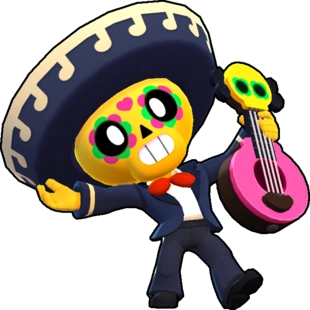

¿Quién es Poco?
Poco emite ondas sonoras que dañan la sensibilidad de los enemigos. Su súper tiene un efecto sanador, tanto para sí mismo como para sus aliados.
Poco es un Brawler Especial que tiene una salud moderadamente alta y la capacidad de proporcionar una curación inmensa a sus compañeros de equipo, pero un daño muy bajo. Para su ataque, Poco toca su guitarra, disparando notas musicales dañinas dentro de un amplio alcance. Su súper dispara una onda musical más grande y más rápida, curándose a sí mismo y a cualquier aliado dentro de su rango.
|  |
NIVEL DE FUERZA 11 |
Sus gadgets
 |
DIAPASÓN: Poco y todos los aliados cercanos recuperan 400 puntos de salud por segundo durante 5 segundos. Municiones por partida:3 |
 |
CANCIÓN PROTECTORA: Elimina los efectos adversos activos de los Brawlers aliados en una superficie extensa y los inmuniza durante 2.0 segundos. Municiones por partida: 3 |
Sus habilidades estelares
 |
MUSICOTERAPIA: Cuando el ataque de Poco alcanza a los brawlers aliados, estos recuperan 700 puntos de salud. |
 |
SIN PLAYBACK: El súper de Poco también inflige 1520 puntos de daño a los enemigos |
Su hipercarga
MELODÍA MEDICA: Aparte de potenciar la curación, Poco da un escudo de 1700 puntos a todos sus aliados y a él mismo. |
 Braian Arancibia
Braian Arancibia Aya El Baarar
Aya El Baarar